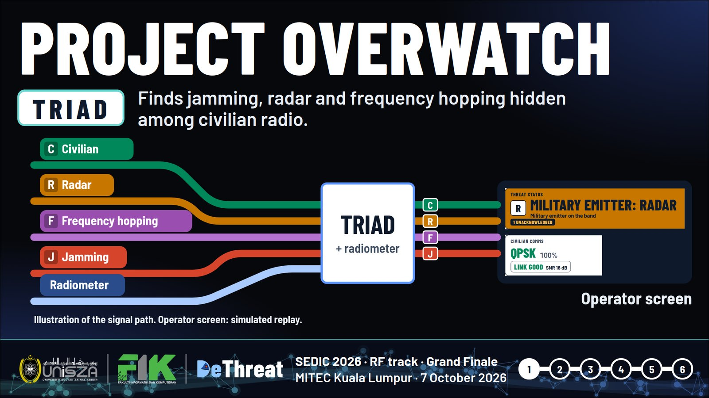
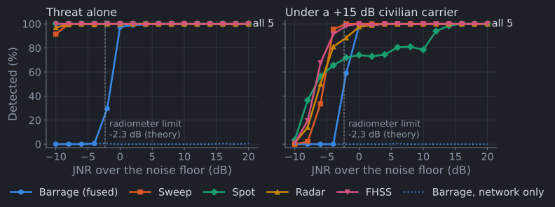
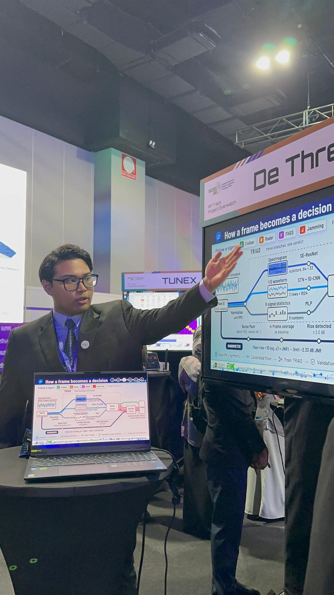
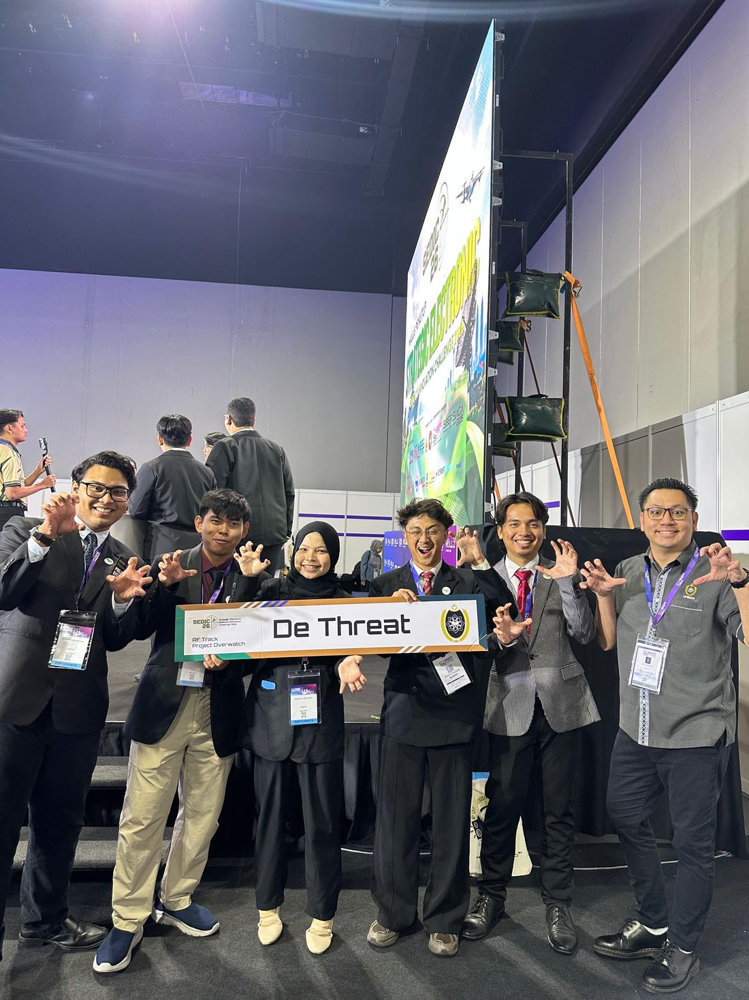
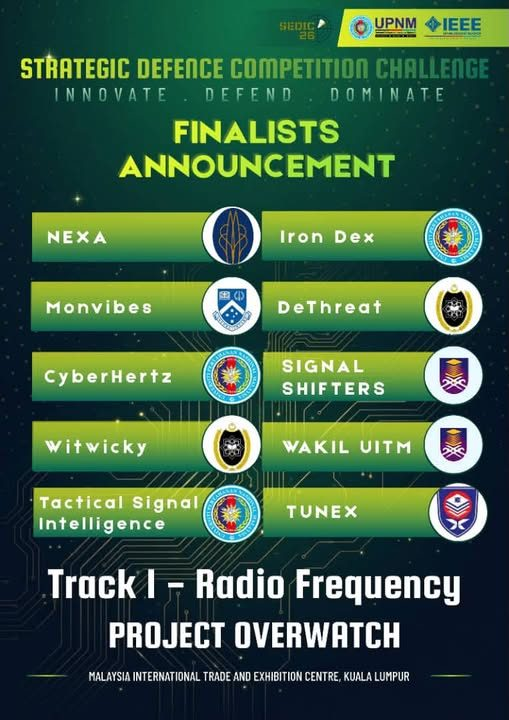
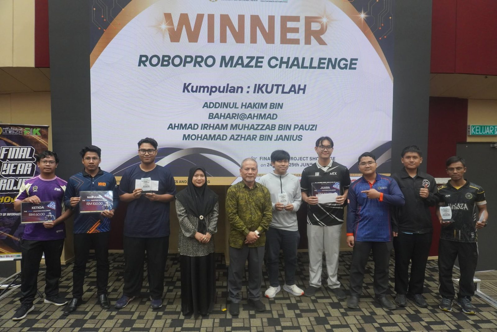
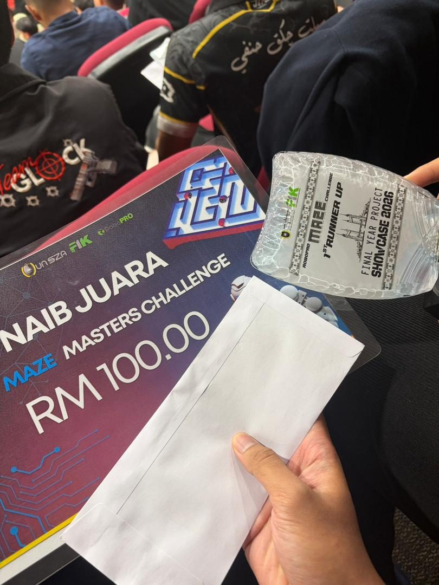
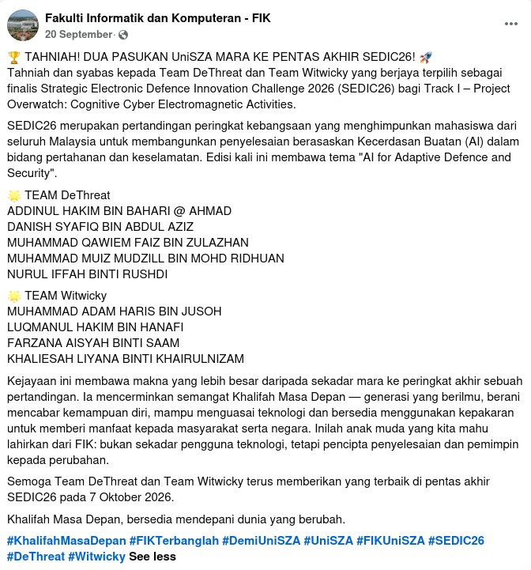
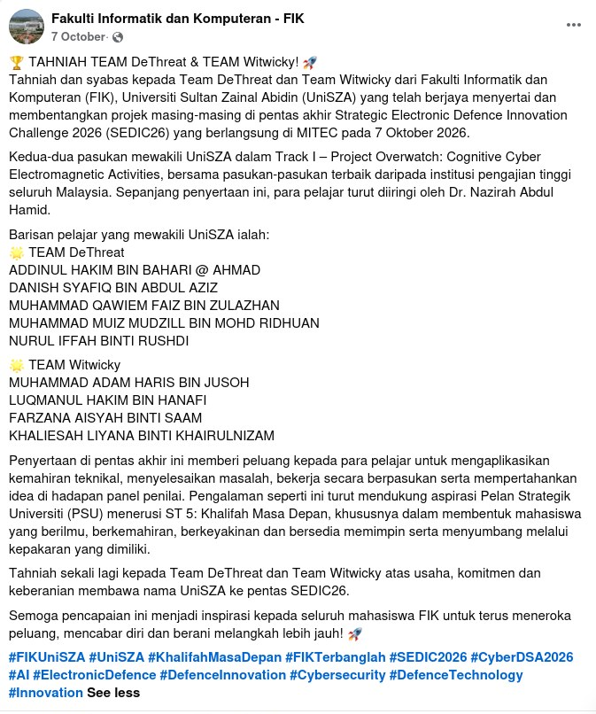
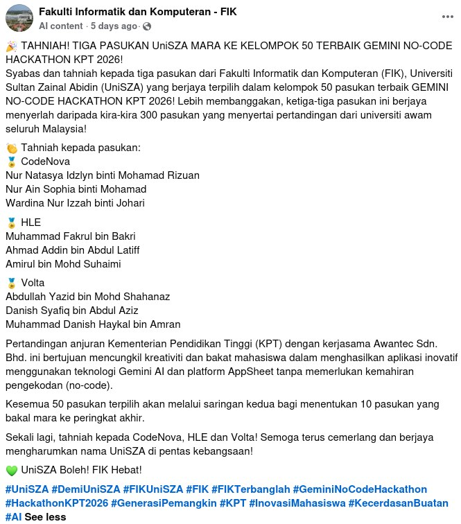

Network Security
Firewalls, segmentation and secure network design. Hands-on with FortiGate configuration and authentication systems.
Cybersecurity · Network Security · Blue Team
Securing networks. Designing defenses.
I'm a Computer Network Security student at UniSZA and a JPA scholar. I hold the CompTIA SecurityX certification, and I'm focused on blue team operations, network defense and security architecture. I want to build systems that are secure by design, not by accident.
Featured certification
Formerly CASP+. An advanced-level certification covering enterprise security architecture, security operations, risk management and cloud security.
Expertise
The areas I study, practice and care about most.
Firewalls, segmentation and secure network design. Hands-on with FortiGate configuration and authentication systems.
Detection, monitoring and incident response. Hands-on deploying Wazuh, Checkmk and Grafana monitoring for a banking client.
Enterprise security design, risk management, privacy and governance, the core of the SecurityX body of knowledge.
Mapping adversary behavior with MITRE ATT&CK, threat detection and security assessment & testing.
Projects
Hands-on work, from the lab to the competition floor.
Real-time RF threat classification for cognitive electronic warfare.
An offline system that reads raw radio (I/Q) frames and flags hostile signals: barrage, sweep and spot jamming, radar and frequency hopping (FHSS). When a civilian carrier is present, it names the modulation (BPSK, QPSK, 16QAM, 64QAM).
It pairs a three-branch neural network, TRIAD, with a physics-based noise-floor radiometer, and runs live on a single laptop behind an operator display.

How a frame becomes a decision
Tracks absolute band power over time. Barrage jamming is band-wide noise that no single normalised frame can show, so physics catches what the network can't.

Results come from a calibrated-receiver simulation with held-out RadioML recordings, not field data.
Certifications
Credentials earned across vendors and disciplines.
Recognition · 18 November 2025
Best Program Award for Semester II, Session 2024/2025, presented by the Dean of the Faculty of Informatics and Computing (FIK), UniSZA, at Majlis Anugerah Cemerlang.
Competitions & hackathons
National finals, hackathons and challenges I've competed in.
Strategic Electronic Defence Innovation Challenge
Team DeThreat reached the national final in Track I, Project Overwatch: Cognitive Cyber Electromagnetic Activities (Radio Frequency). We presented our solution to the judging panel under this year's theme, “AI for Adaptive Defence and Security”, alongside the top teams from universities across Malaysia.
We built Project Overwatch, an offline RF threat monitor powered by our TRIAD neural network and a physics-based radiometer. See the project ›



Maze Masters Challenge · Final Year Project Showcase 2026
Won Naib Juara (1st Runner-Up) in the robotics maze challenge at FIK UniSZA's Final Year Project Showcase. Teams had to get their robot through the maze as fast and as accurately as possible.


Team Volta was one of the top 50 teams nationwide, out of about 300 teams from public universities across Malaysia. We built an app with Gemini AI and AppSheet, without writing code. This was my second time competing, after joining the 2025 edition.
Ministry of Higher Education (KPT) × Awantec · Nov 2026
A smart digital identity hackathon by nexG and Kolaxus, with industry and academic partners including SecureMetric, Cyberview, UPNM and UTM CYRES.
nexG × Kolaxus · 5 Dec 2025 – 10 Jan 2026
Featured by



Also
Journey
Fronix Sdn. Bhd. · Petaling Jaya
TrackerHero
Supported core development of two major company software systems, and streamlined the support ecosystem and system automation workflows.
Universiti Sultan Zainal Abidin (UniSZA)
CGPA 3.91. JPA scholar. Class tutoring mentor. Led PMFIK, the faculty's student association.
Kolej Profesional MARA (KPM)
CGPA 3.93. Class tutoring mentor.
SMK Bandar Tasik Puteri
6A, 2A-, 1B+. Business, Economics & Computer Science stream.
Leadership & community
Logistics & equipment committee for the “Jom Didik, Jom Sayang!” community service programme at Sekolah Kebangsaan Tembila, Besut.
Organised and ran a CSR programme at Rumah Anak Yatim Bait Al-Amin, Parit, Perak, with the Student Representative Council.
Hands-on volunteer in an animal welfare and turtle conservation CSR programme.
Staff and volunteer for Karnival Sukan Staf KPM & KPM (KASAF) 2022.